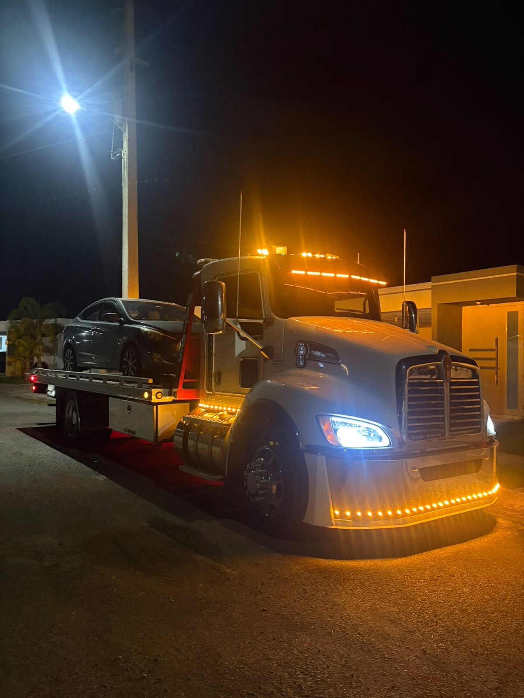
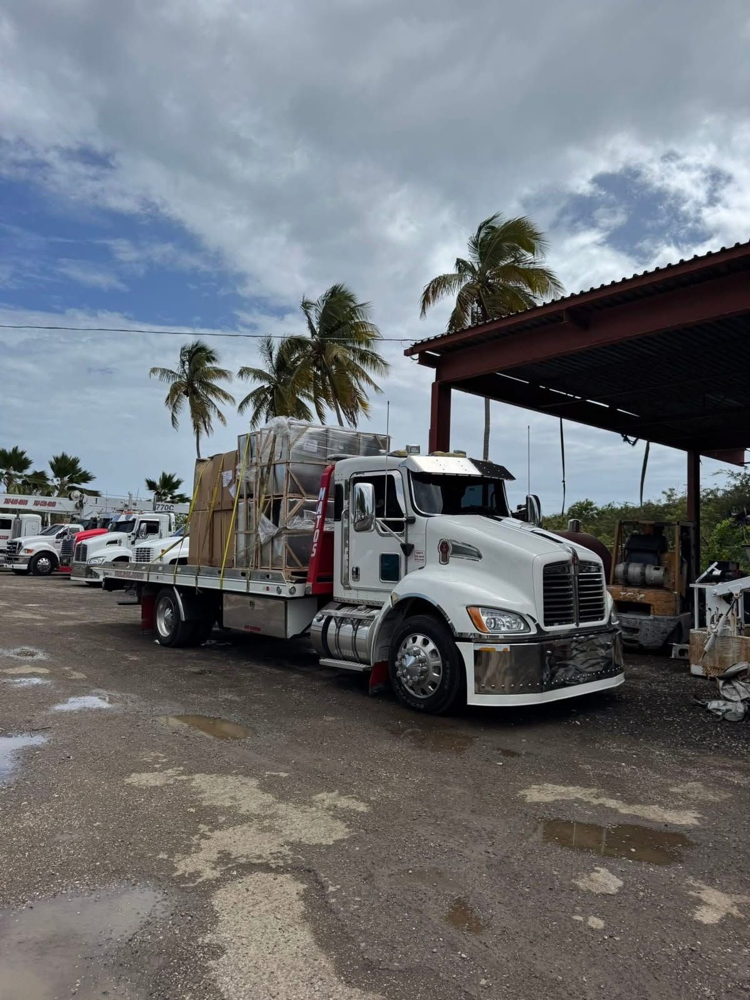
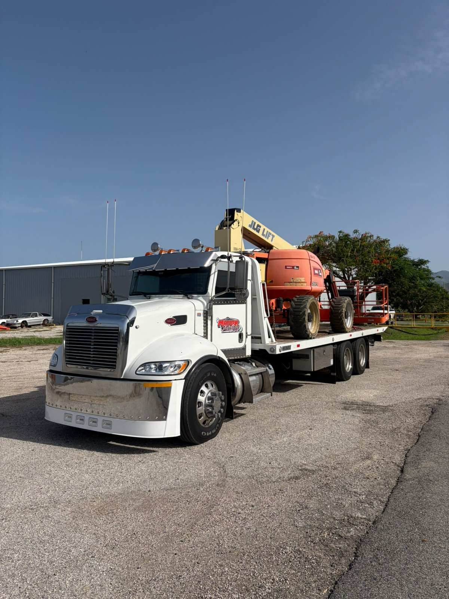
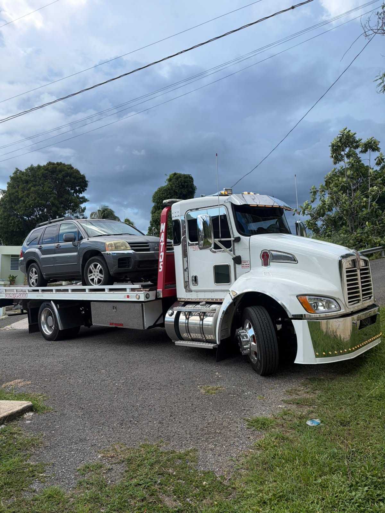
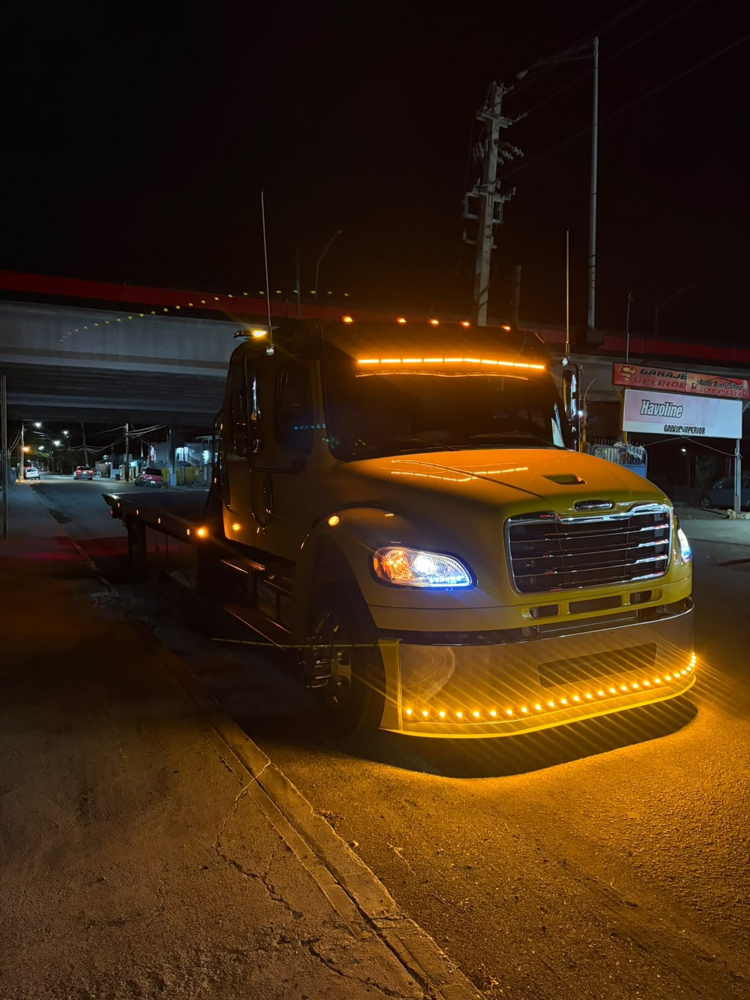
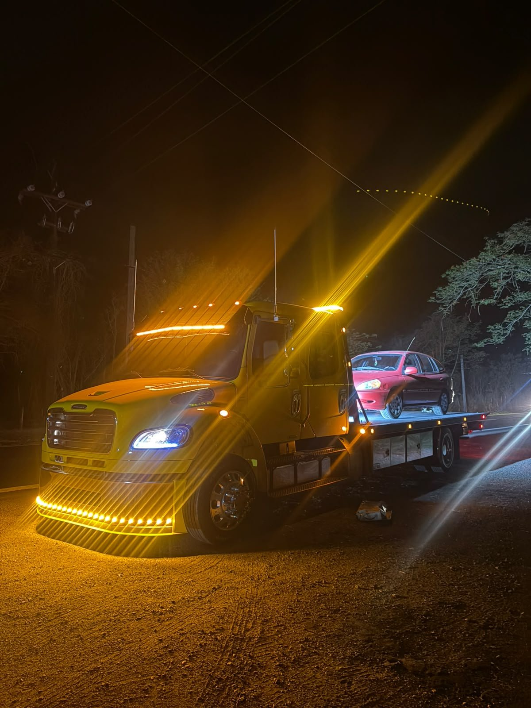
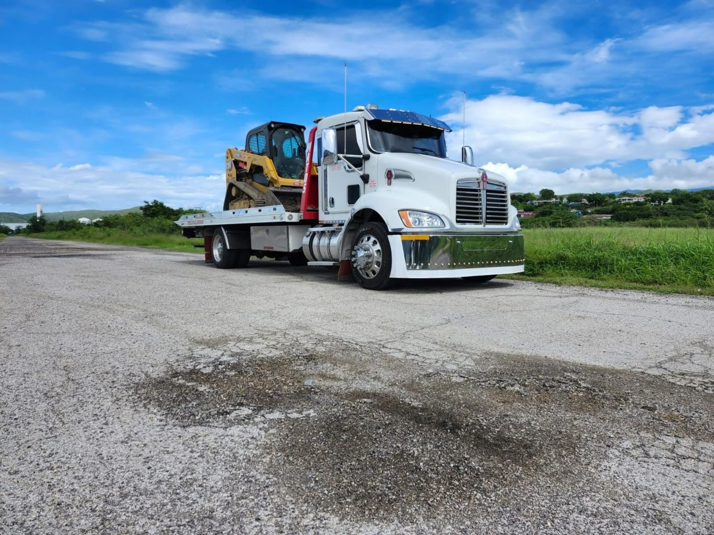
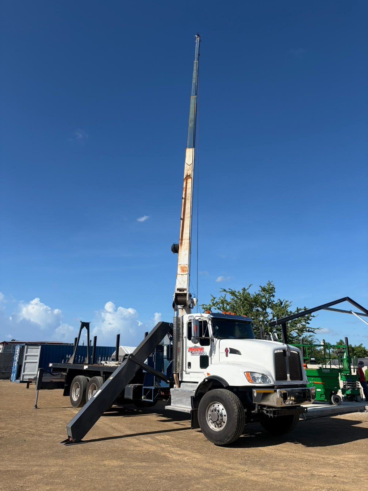
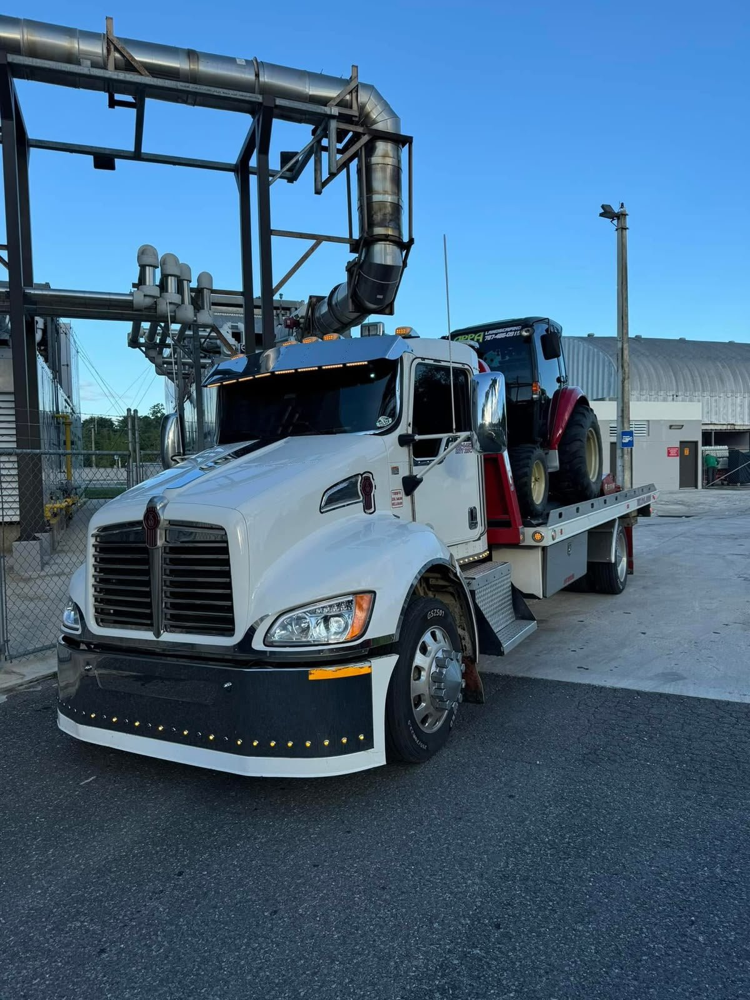

Servicio
Remolque 24/7
Servicio de grúa las 24 horas, en Ponce y en toda la isla. Tu vehículo llega seguro a donde tiene que llegar, con camión de plataforma propio.
Pedir este servicio →
Servicio de grúa con camión de plataforma propio, siempre abierto, en Ponce y en toda la isla. Una llamada basta: llegamos donde estés y lo resolvemos en el lugar — o remolcamos tu vehículo con cuidado.
Un solo número para cualquier emergencia en la carretera. Remolque y asistencia completa en el lugar, en Ponce y en toda la isla, las 24 horas.
Servicio de grúa las 24 horas, en Ponce y en toda la isla. Tu vehículo llega seguro a donde tiene que llegar, con camión de plataforma propio.
Pedir este servicio →
Paso de corriente y carga de batería en el lugar. Si tu auto no enciende, lo resolvemos donde estés, sin esperar una grúa completa.
Pedir este servicio →
Te quedaste fuera del auto o perdiste las llaves. Abrimos tu vehículo en el lugar, sin daños y sin esperas largas.
Pedir este servicio →
Goma vacía o pinchada en la carretera. La cambiamos en el lugar para que sigas tu camino sin esperar una grúa completa.
Pedir este servicio →
Te quedaste sin gasolina en la carretera. Te llevamos combustible al lugar para que sigas tu camino.
Pedir este servicio →
Movimiento de vehículos en toda la isla, con camión de plataforma. Llevamos tu vehículo a donde lo necesites, con cuidado.
Pedir este servicio →
Movemos tractores, skid steers, lifts y equipos pesados en plataforma, en toda la isla. Carga asegurada y entrega donde la necesites.
Pedir este servicio →
Servicio de grúa con pluma para levantar y mover equipos pesados en el trabajo. El equipo que ves en las fotos, es el que llega.
Pedir este servicio →
Al 787-241-8427, por llamada o WhatsApp. Siempre abierto, a cualquier hora.
Pueblo, referencia cercana y tipo de vehículo. Con eso salimos a buscarte lo antes posible.
Lo arreglamos en el lugar cuando se puede — y si no, remolcamos tu vehículo con cuidado.
14 fotos reales nuevas, enviadas por el cliente. Toca la imagen grande para verla completa, o elige una miniatura.

Servicio de grúa a nivel isla, desde Ponce. No importa en qué pueblo te quedes — del área metro hasta el pueblo más lejos, vamos por ti.
Ponce, Guayama, Salinas, Santa Isabel y todo el sur.
San Juan, Bayamón, Guaynabo, Carolina y todo el metro.
Arecibo, Vega Baja, Manatí, Barceloneta y la costa norte.
Humacao, Fajardo, Caguas, Gurabo y el este de la isla.
Mayagüez, Aguadilla, Añasco, Cabo Rojo y el oeste.
Utuado, Jayuya, Adjuntas, Orocovis y la montaña.
Lo que más nos preguntan los clientes cuando se quedan a pie.
Sí. Estamos siempre abiertos. Llámanos o escríbenos por WhatsApp al 787-241-8427 a cualquier hora.
Toda la isla. Estamos en Ponce y llegamos a los 78 municipios de Puerto Rico, del área metro hasta el pueblo más lejos.
Muchas veces lo resolvemos en el lugar: battery booster, cerrajería, cambio de goma y servicio de gasolina. Si no se puede en el lugar, entonces lo remolcamos.
Sí. Movemos tractores, skid steers, lifts y equipos pesados en plataforma, en toda la isla, y tenemos grúa con pluma para levantar equipos en el trabajo.
Tu ubicación (pueblo y referencia cercana) y el tipo de vehículo. Con eso salimos a buscarte lo antes posible.
Llena el formulario y tu mensaje llega directo a nuestro WhatsApp. Respondemos 24/7.
Si es una emergencia, la llamada es más rápida que el formulario. Hablas directo con quien va a buscarte.
Línea directa · 24/7787-241-8427C.M Towing ServicesServicio de grúa · Ponce, Puerto Rico